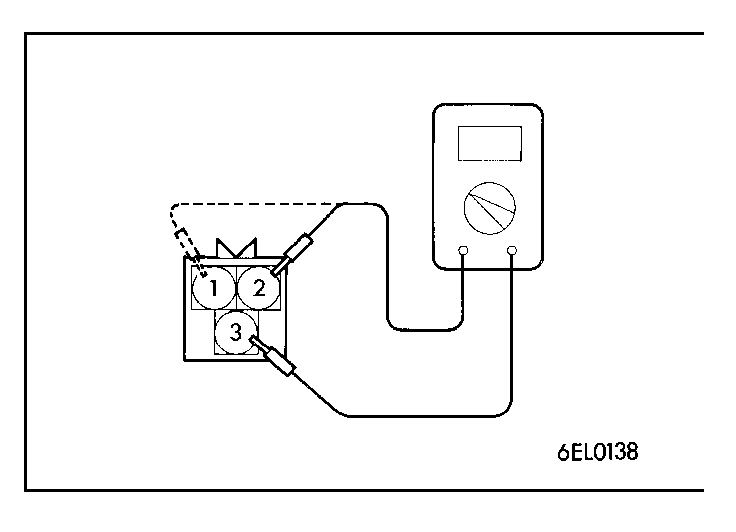
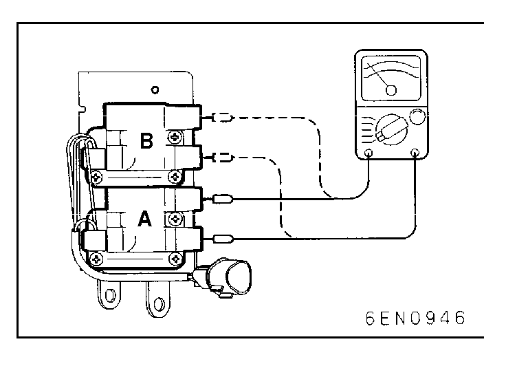
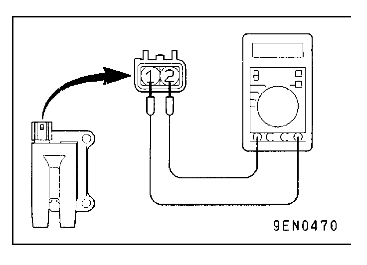
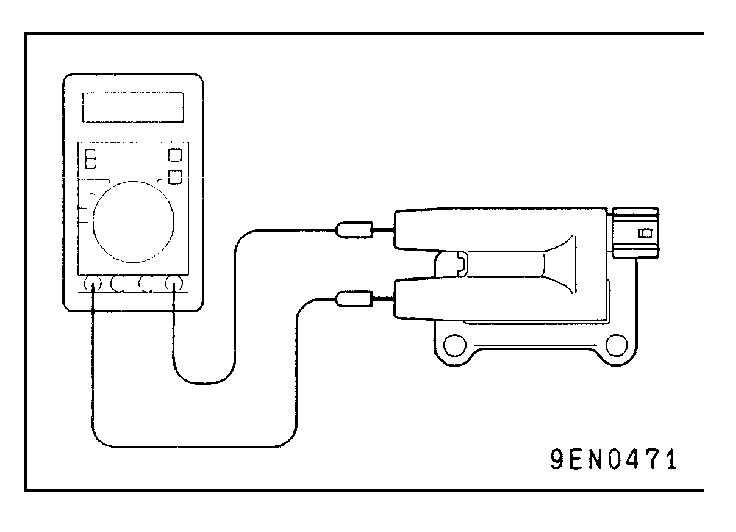

![[Previous]](https://mitsubishitechinfo.com/data/F24S/BUTTONS/fprevg.png)
![[Next]](https://mitsubishitechinfo.com/data/F24S/BUTTONS/fnextg.png)
   
IGNITION COIL CHECK
<2.0L Engine (Turbo)>
Primary Coil Resistance
Measure the resistance between connector terminal 3 (power) and each coil terminal.
Measuring point:
No. 1 - No. 4 cylinder side coil; 2 - 3
No. 2 - No. 3 cylinder side coil; 1 - 3
Standard value: 0.70 - 0.86Ω
Secondary Coil Resistance
Measure the resistance between coil high voltage terminals.
Measuring point:
No. 1 - No. 4 cylinder side coil; A
No. 2 - No. 3 cylinder side coil; B
Standard value: 11.3 - 15.3 kΩ
<2.4L Engine>
Primary Coil Resistance
Measure the resistance between the ignition coil connector terminals.
Standard value: 0.74 - 0.90Ω
Secondary Coil Resistance
Measure the resistance between the ignition coil connector terminals.
Standard value: 20.1 - 27.3 kΩ